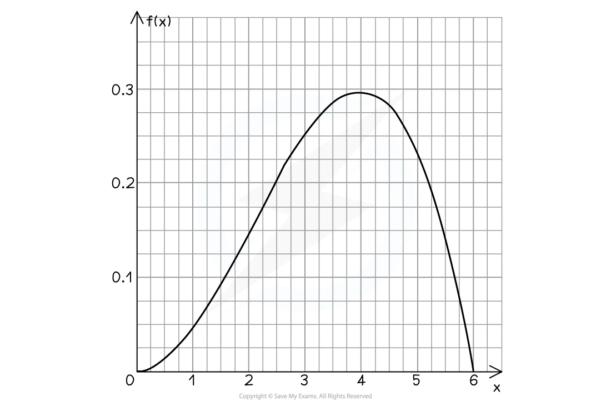
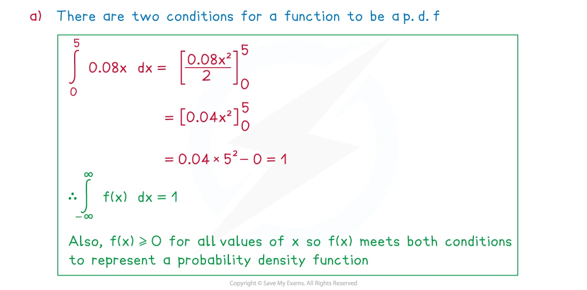
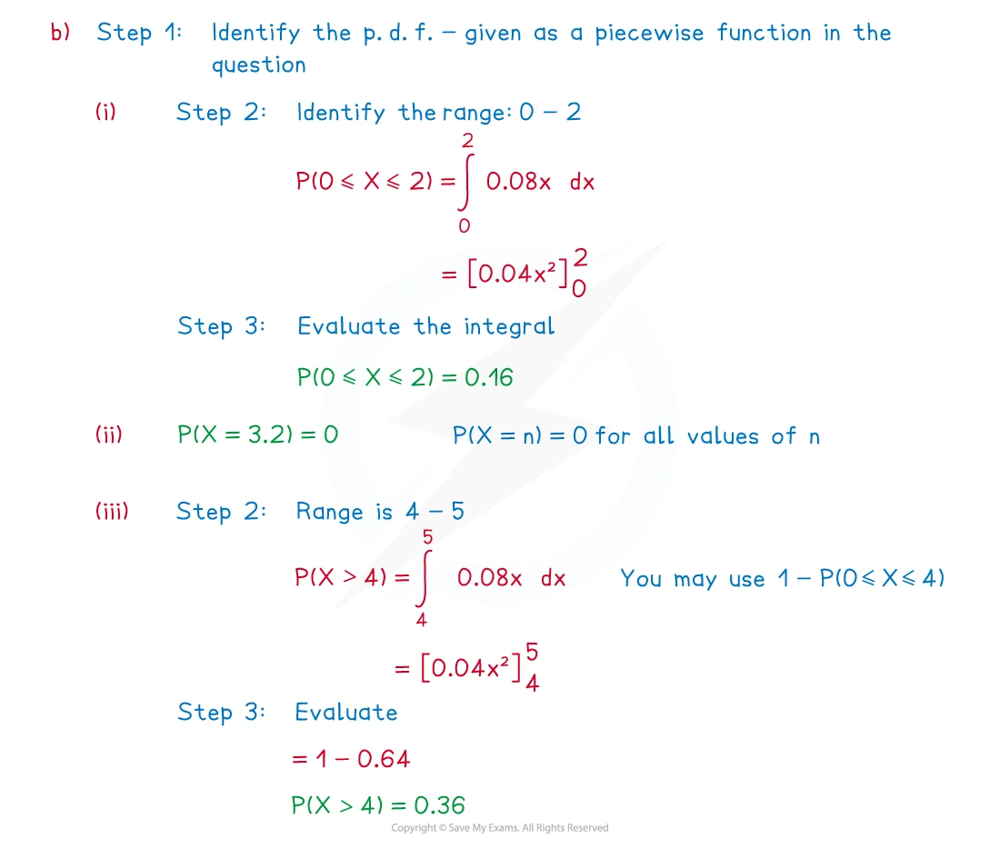
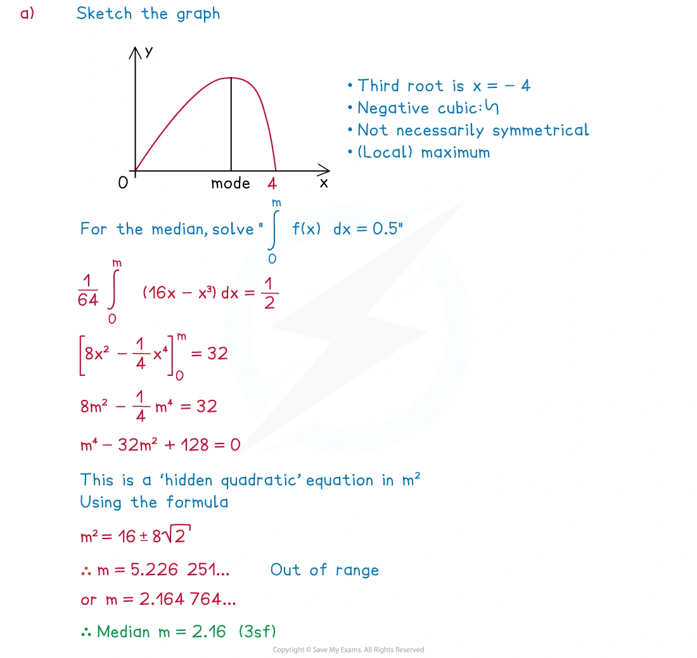
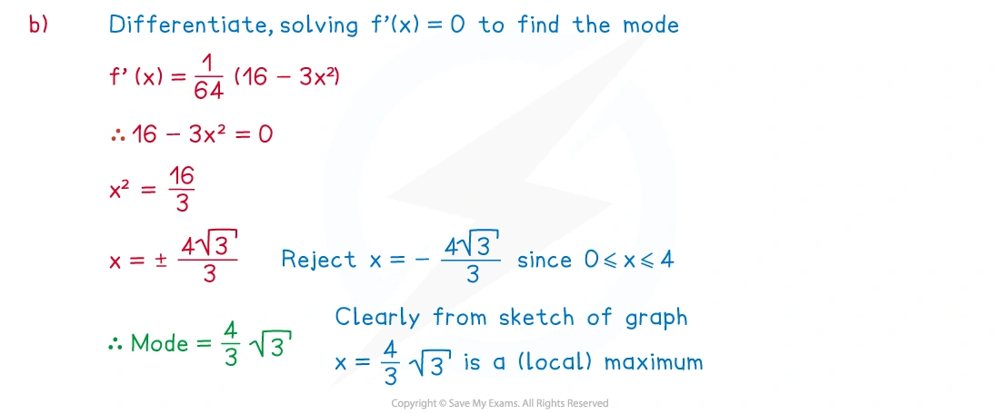
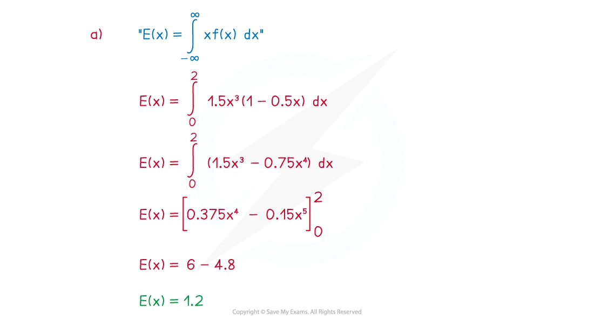
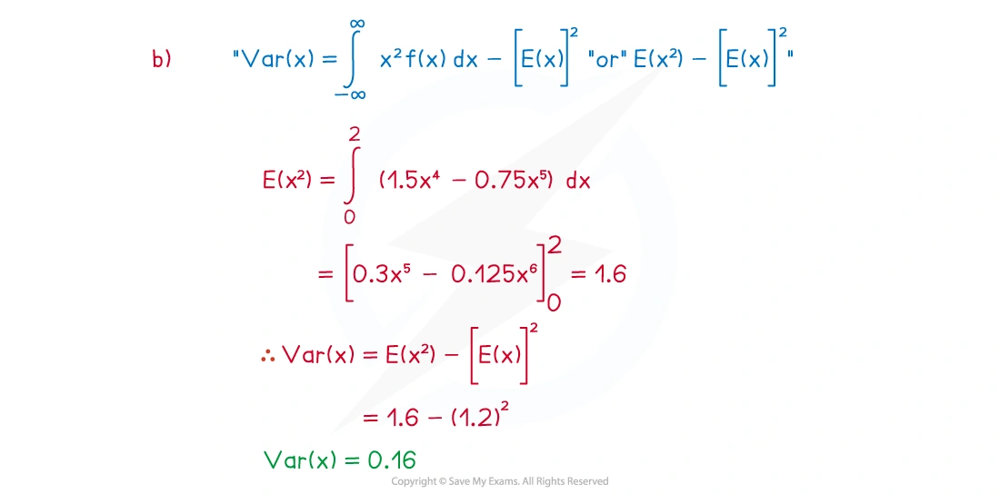
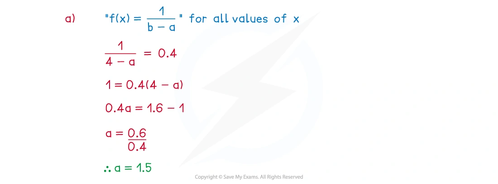
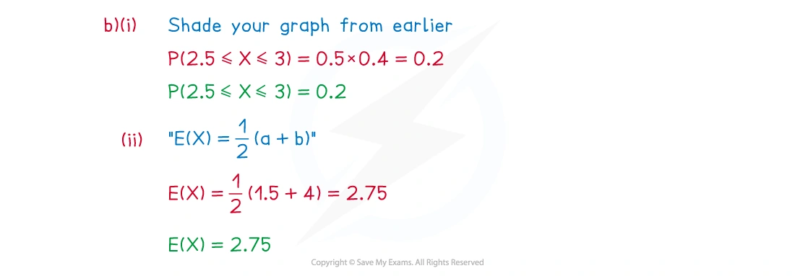

6.3 Continuous random variables
Probability density functions · mean · variance · percentiles
本页依据 9709 Mathematics 2026–2027 syllabus 6.3，覆盖：
- 理解 continuous random variable 和 probability density function 的性质；
- 使用 p.d.f. 通过面积或积分求概率；
- 使用 p.d.f. 计算分布的 mean 和 variance；
- 由面积求 median 和其他 percentiles；
- 处理定义在单个区间上的 p.d.f.，区间可以是有限或无限的。
考纲不要求显式使用 cumulative distribution function；本页均直接使用 p.d.f. 的积分面积。
真题均来自本地原始 QP，并与对应 mark scheme 核对；题目保持原文，不改写或编造。
Learning objectives
1. Core knowledge
Probability density function
连续随机变量 X 的 probability density function（p.d.f.）f(x) 必须满足
f(x)\ge0, \qquad \int_{-\infty}^{\infty}f(x)\,dx=1.
概率是曲线下的面积：
P(a<X<b)=\int_a^b f(x)\,dx.
连续变量在单点处的概率为零：
P(X=a)=0,
所以 P(a<X<b)、P(a\le X<b) 和 P(a\le X\le b) 相等。

Checking a p.d.f.
若 f(x) 含有未知常数，先使用总面积为 1：
\int_a^b f(x)\,dx=1.
然后检查在定义域内 f(x)\ge0。超出给定区间通常有 f(x)=0。
Mean and variance
连续随机变量的 mean 为
E(X)=\int_{-\infty}^{\infty}xf(x)\,dx.
先求 second moment：
E(X^2)=\int_{-\infty}^{\infty}x^2f(x)\,dx.
再求 variance：
\operatorname{Var}(X)=E(X^2)-[E(X)]^2.
注意最后一项是 mean 的平方，不是 E(X^2)。
Median, mode and percentiles
Median m 满足左右各有一半面积：
P(X<m)=0.5 \quad\Longleftrightarrow\quad \int_{-\infty}^{m}f(x)\,dx=0.5.
更一般地，若 q-percentile 为 c，则
P(X<c)=q \quad\Longleftrightarrow\quad \int_{-\infty}^{c}f(x)\,dx=q.
Mode 是 f(x) 取得最大值时的 x 值。若曲线对称，median 位于对称轴上；但求 mode 仍要找密度的最高点。
Continuous uniform distribution
若 X 在 a\le X\le b 上均匀分布，则 p.d.f. 为
f(x)= \begin{cases} \dfrac1{b-a},&a\le x\le b,\\ 0,&\text{otherwise}. \end{cases}
图像是高度为 1/(b-a) 的矩形。常用结果：
E(X)=\frac{a+b}{2}, \qquad \operatorname{Var}(X)=\frac{(b-a)^2}{12}.
2. Note worked examples
每个 worked example 单独成卡片；图片均由原始 2. Statistical Distributions.pdf 的内嵌资源独立提取，不使用页面截图。
Worked example 1 · Checking a p.d.f. and calculating probabilities
The continuous random variable X has probability density function
f(x)= \begin{cases} 0.08x,&0\le x\le5,\\ 0,&\text{otherwise}. \end{cases}
Show that f(x) can represent a probability density function.
Find:
P(0\le X\le2);
P(X=3.2);
P(X>4).
For (a),
\int_0^5 0.08x\,dx=0.04x^2\Big|_0^5=1,
and f(x)\ge0 on 0\le x\le5.
For (b),
P(0\le X\le2)=\int_0^2 0.08x\,dx=\boxed{0.16},
P(X=3.2)=\boxed{0},
and
P(X>4)=\int_4^5 0.08x\,dx=\boxed{0.36}.


Worked example 2 · Median and mode
The continuous random variable X has probability density function
f(x)=\frac{x(16-x^2)}{64},\qquad 0\le x\le4.
Find the median of X, giving your answer to three significant figures.
Find the exact value of the mode of X.
For the median m,
\int_0^m\frac{x(16-x^2)}{64}\,dx=0.5.
This gives
\frac{m^2}{8}-\frac{m^4}{256}=0.5.
Solving within 0\le m\le4 gives
\boxed{m=2.16\text{ (3 s.f.)}}.
For the mode, differentiate:
f(x)=\frac{16x-x^3}{64}, \qquad f'(x)=\frac{16-3x^2}{64}.
Thus f'(x)=0 gives x=4/\sqrt3, and this is the maximum point:
\boxed{\text{mode}=\frac4{\sqrt3}}.


Worked example 3 · Mean and variance from a p.d.f.
The continuous random variable X has p.d.f.
f(x)= \begin{cases} 1.5x^2(1-0.5x),&0\le x\le2,\\ 0,&\text{otherwise}. \end{cases}
Find E(X) and \operatorname{Var}(X).
First,
\begin{aligned} E(X)&=\int_0^2x\cdot1.5x^2(1-0.5x)\,dx\\ &=\int_0^2(1.5x^3-0.75x^4)\,dx\\ &=\boxed{1.2}. \end{aligned}
Next,
E(X^2)=\int_0^2x^2\cdot1.5x^2(1-0.5x)\,dx=1.6.
Therefore
\operatorname{Var}(X)=1.6-(1.2)^2=\boxed{0.16}.


Worked example 4 · Continuous uniform distribution
The continuous random variable X is modelled by the uniform distribution such that f(x)=0.4 for a\le x\le4 and f(x)=0 otherwise.
Show that a=1.5.
Find:
P(2.5\le X\le3);
E(X).
Find the standard deviation of X, giving your answer in the form a\sqrt3, where a is a rational number.
Since the rectangle has total area 1,
0.4(4-a)=1 \implies \boxed{a=1.5}.
Then
P(2.5\le X\le3)=0.4(3-2.5)=\boxed{0.2},
E(X)=\frac{1.5+4}{2}=\boxed{2.75}.
The variance is
\operatorname{Var}(X)=\frac{(4-1.5)^2}{12}=\frac{25}{48},
so
\operatorname{sd}(X)=\sqrt{\frac{25}{48}}=\boxed{\frac5{12}\sqrt3}.


3. Verified Paper 6 questions
以下题组保持原始题干、全部小问和原始分值；答案按对应 mark scheme 的得分路径展开。
Question 1 · 9709/61/M/J/20 Q6(a–f)
The length of time, T minutes, that a passenger has to wait for a bus at a certain bus stop is modelled by the probability density function given by
f(t)= \begin{cases} \dfrac3{4000}(20t-t^2),&0\le t\le20,\\ 0,&\text{otherwise}. \end{cases}
Sketch the graph of y=f(t). [1]
Hence explain, without calculation, why E(T)=10. [1]
Find \operatorname{Var}(T). [3]
It is given that P(T<10+a)=p, where 0<a<10. Find P(10-a<T<10+a) in terms of p. [2]
Find P(8<T<12). [3]
Give one reason why this model may be unrealistic. [1]
Show detailed mark scheme answer
The graph is a downward-opening quadratic with roots at t=0 and t=20, shown only on 0\le t\le20.
The p.d.f. is symmetrical about t=10, so the mean is at the line of symmetry:
\boxed{E(T)=10}.
E(T^2)=\int_0^{20}t^2\frac3{4000}(20t-t^2)\,dt=120.
Thus
\operatorname{Var}(T)=E(T^2)-[E(T)]^2=120-10^2=\boxed{20}.
- By symmetry, P(T<10-a)=1-p. Therefore
P(10-a<T<10+a)=p-(1-p)=\boxed{2p-1}.
\begin{aligned} P(8<T<12) &=\int_8^{12}\frac3{4000}(20t-t^2)\,dt\\ &=\boxed{\frac{37}{125}=0.296}. \end{aligned}
- For example, the model does not allow waiting times greater than 20 minutes.
Question 2 · 9709/63/M/J/20 Q6(a–c)
The length, X centimetres, of worms of a certain type is modelled by the probability density function
f(x)= \begin{cases} \dfrac6{125}(10-x)(x-5),&5\le x\le10,\\ 0,&\text{otherwise}. \end{cases}
State the value of E(X). [1]
Find \operatorname{Var}(X). [3]
Two worms of this type are chosen at random. Find the probability that exactly one of them has length less than 6 cm. [5]
Show detailed mark scheme answer
- The p.d.f. is symmetrical about x=7.5, so
\boxed{E(X)=7.5}.
\begin{aligned} E(X^2)&=\int_5^{10}x^2\frac6{125}(10-x)(x-5)\,dx\\ &=57.5. \end{aligned}
Therefore
\operatorname{Var}(X)=57.5-(7.5)^2=\boxed{1.25}.
- First find the probability that one worm is shorter than 6 cm:
\begin{aligned} p=P(X<6) &=\int_5^6\frac6{125}(10-x)(x-5)\,dx\\ &=0.104. \end{aligned}
Exactly one of two independent worms has this property, so
P=2p(1-p)=2(0.104)(0.896)=\boxed{0.186\text{ (3 s.f.)}}.Question 3 · 9709/61/O/N/21 Q4(a–c)
A random variable X has probability density function given by
f(x)= \begin{cases} \dfrac1{18}(9-x^2),&0\le x\le3,\\ 0,&\text{otherwise}. \end{cases}
Find P(X<1.2). [3]
Find E(X). [3]
The median of X is m.
- Show that m^3-27m+27=0. [3]
Show detailed mark scheme answer
\begin{aligned} P(X<1.2) &=\frac1{18}\int_0^{1.2}(9-x^2)\,dx\\ &=\frac1{18}\left[9x-\frac{x^3}{3}\right]_0^{1.2}\\ &=\boxed{\frac{71}{125}=0.568}. \end{aligned}
\begin{aligned} E(X)&=\frac1{18}\int_0^3x(9-x^2)\,dx\\ &=\frac1{18}\left[\frac{9x^2}{2}-\frac{x^4}{4}\right]_0^3\\ &=\boxed{\frac98=1.125}. \end{aligned}
- Since m is the median,
\frac1{18}\int_0^m(9-x^2)\,dx=0.5.
Hence
\frac1{18}\left(9m-\frac{m^3}{3}\right)=\frac12 \implies 27m-m^3=27,
so
\boxed{m^3-27m+27=0}.Question 4 · 9709/62/F/M/22 Q6(a–d)
In a game a ball is rolled down a slope and along a track until it stops. The distance, in metres, travelled by the ball is modelled by the random variable X with probability density function
f(x)= \begin{cases} -k(x-1)(x-3),&1\le x\le3,\\ 0,&\text{otherwise}, \end{cases}
where k is a constant.
Without calculation, explain why E(X)=2. [1]
Show that k=\dfrac34. [3]
Find \operatorname{Var}(X). [3]
One turn consists of rolling the ball 3 times and noting the largest value of X obtained. If this largest value is greater than 2.5, the player scores a point.
- Find the probability that on a particular turn the player scores a point. [4]
Show detailed mark scheme answer
- The density is a quadratic symmetric about x=2, so the mean is
\boxed{E(X)=2}.
- Since the total area is 1,
\begin{aligned} 1&=-k\int_1^3(x^2-4x+3)\,dx\\ &=-k\left[\frac{x^3}{3}-2x^2+3x\right]_1^3\\ &=k\frac43. \end{aligned}
Therefore \boxed{k=3/4}.
\begin{aligned} E(X^2)&=-\frac34\int_1^3(x^4-4x^3+3x^2)\,dx\\ &=\frac{21}{5}. \end{aligned}
Thus
\operatorname{Var}(X)=\frac{21}{5}-2^2=\boxed{0.2}.
- First,
P(X>2.5)=-\frac34\int_{2.5}^{3}(x^2-4x+3)\,dx=\frac5{32}.
The probability that the maximum of three rolls is at most 2.5 is (1-5/32)^3. Therefore
P(\text{score})=1-\left(\frac{27}{32}\right)^3 =\boxed{0.399\text{ (3 s.f.)}}.Question 5 · 9709/62/O/N/24 Q6(a–d)
The time, X hours, taken by a large number of people to complete a challenge is modelled by the probability density function given by
f(x)= \begin{cases} \dfrac1{x^2},&a\le x\le b,\\ 0,&\text{otherwise}, \end{cases}
where a and b are constants.
State what the constants a and b represent in this context. [1]
Show that a=\dfrac{b}{b+1}. [3]
It is given that E(X)=\ln3.
Show that b=2 and find the value of a. [4]
Find the median of X. [3]
Show detailed mark scheme answer
a is the minimum completion time and b is the maximum completion time.
Total area is 1:
\int_a^b\frac1{x^2}\,dx=1 \implies\left[-\frac1x\right]_a^b=1.
Hence
-\frac1b+\frac1a=1 \implies b-a=ab \implies \boxed{a=\frac{b}{b+1}}.
E(X)=\int_a^b x\cdot\frac1{x^2}\,dx =\int_a^b\frac1x\,dx =\ln b-\ln a.
Using a=b/(b+1),
\ln b-\ln\left(\frac{b}{b+1}\right)=\ln(b+1)=\ln3.
Thus b+1=3, so
\boxed{b=2,\qquad a=\frac23}.
- If the median is m,
\int_{2/3}^{m}\frac1{x^2}\,dx=0.5.
Therefore
-\frac1m+\frac32=\frac12 \implies \boxed{m=1}.Question 6 · 9709/63/O/N/24 Q4(a–b)
A random variable X has probability density function f defined by
f(x)= \begin{cases} \dfrac{a}{x^2}-\dfrac{18}{x^3},&2\le x\le3,\\ 0,&\text{otherwise}, \end{cases}
where a is a constant.
Show that a=\dfrac{27}{2}. [3]
Show that
E(X)=\frac{27}{2}\ln\frac32-3.
[3]
Show detailed mark scheme answer
- Use total area 1:
\begin{aligned} 1&=\int_2^3\left(\frac{a}{x^2}-\frac{18}{x^3}\right)\,dx\\ &=\left[-\frac{a}{x}+\frac9{x^2}\right]_2^3\\ &=\frac{a}{6}-\frac54. \end{aligned}
Thus a/6=9/4, so
\boxed{a=\frac{27}{2}}.
- p.d.f. 的总面积必须为 1，且定义域内不能出现负密度。
- 连续变量的单点概率为 0，题目中的等号通常不改变概率。
- 求 variance 时使用 E(X^2)-[E(X)]^2，不要把两者混淆。
- median / percentile 要把左侧面积设为 0.5 / 指定概率。
- 对称 p.d.f. 可以直接确定 mean 或 median 的位置，但仍要检查题目要求的是哪一个量。